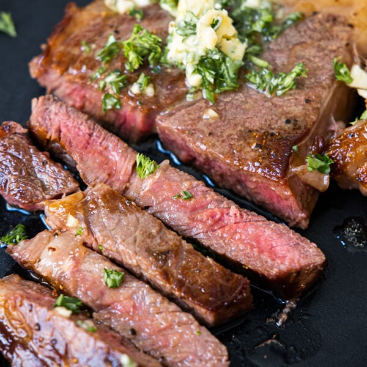

Wagyu Steak
How to cook a wagyu steak

Have you ever had a steak that made you rethink your life's trajectory, possibly made you think of going into the cattle breeding business? No? Then you've never had a wagyu beef steak.
No one knows quite how the amazing cooks and agricultural genius' in Japan have figured it out (plus, we just don't ask questions), but the Japanese A1 wagyu beef would make a vegetarian pick up a rifle and run out the door ready to hunt!
Ingredients
- Any size portion of wagyu steak
- Butter, so so much butter
- Seasonings, pepper, salt, rosemary, garlic and thyme
- Access to a charcoal grill, or a cast iron skillet
- And finally, a very sharp knife
Steps
- Bring steak to room temperature and pat dry with paper towel
- Warm up charcoal grill or warm up a tablespoon of oil in cast iron skillet
- Coat both sides of steak with salt and pepper
- Place steak on either cooking surface and sear both sides for about a minute or two
- Remove steak, then melt butter in cast iron skillet and ad crushed garlic
- Add steak back to pan and place fresh rosemary and thyme on top
- Now bask steak with melted butter on both side for another 2 minutes, then remove and let it rest
- After the steak rests for about 5 minutes, slice into pieces and absolutely destroy it
And there you have it, the best wagyu steak recipe on the internet!